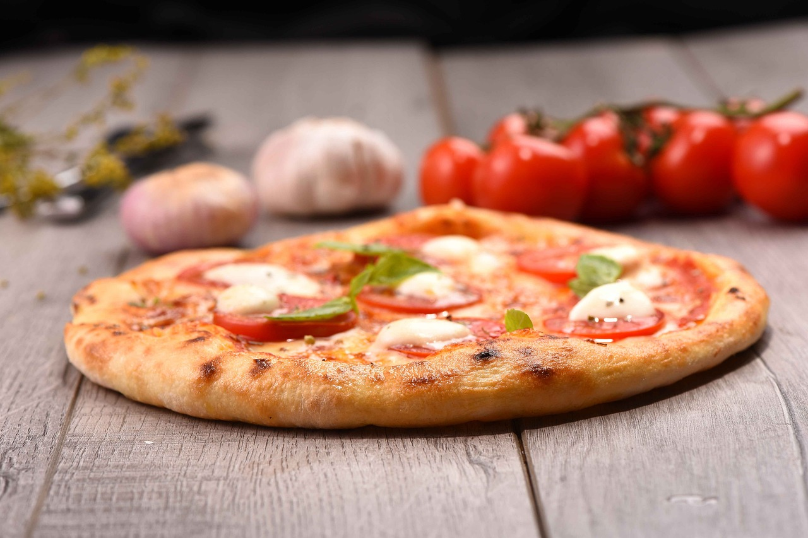

Pizza Margherita

Description
Enjoy the timeless taste of Italy with this mouthwatering Margherita Pizza recipe! Made with a crispy thin-crust, fresh San Marzano tomato sauce, creamy fresh mozzarella cheese, and fragrant basil leaves, this pizza is a true culinary masterpiece. Its vibrant colors of red, white, and green represent the Italian flag, making it a symbol of national pride and gastronomic excellence. With its delectable combination of flavors and textures, Margherita Pizza is a beloved classic that never fails to satisfy. Whether you're hosting friends for dinner or treating yourself to a cozy night in, this recipe is sure to impress and leave you savoring every bite.
Ingredients
- 112-inch round of pizza dough, stretched
- 3 tablespoons tomato sauce (preferably San Marzano tomatoes)
- Extra-virgin olive oil
- 2¾ ounces fresh mozzarella cheese
- 4 to 5 basil leaves, roughly torn
Steps
- Heat your oven to its highest setting (around 550°F) and preheat a pizza stone or tiles for at least 1 hour.
- Place the sauce in the center of the stretched dough and spread it evenly across the surface, stopping approximately ½ inch from the edges.
- Drizzle a little olive oil over the pie. Break the cheese into large pieces and place these gently on the sauce. Scatter basil leaves over the top.
- Slide the pizza onto the heated stone or tiles in the oven and bake until the crust is golden brown and the cheese is bubbling, approximately 4 to 8 minutes.